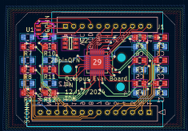
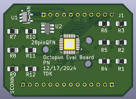
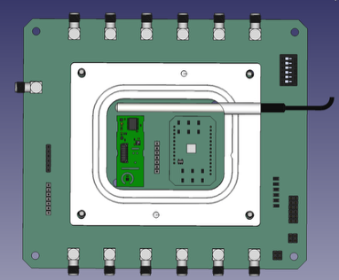
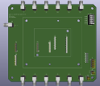
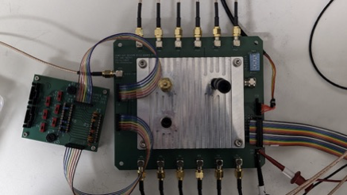
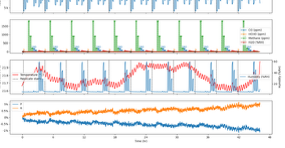
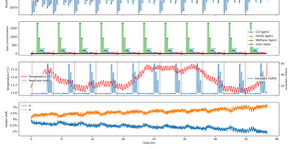
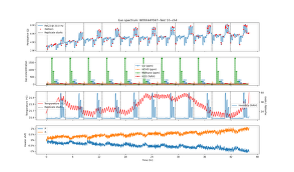

Industry experience & hardware
Optical instrumentation · Hardware design · System validation
TDK
Sensor Engineer Intern · 2024





Altium DesignerPCB LayoutCADSensor IntegrationHardware Validation
Formlabs
SLS Print Process R&D Intern · 2025



Experiment DesignPythonData ProcessingProcess ValidationSystem Troubleshooting
Earlier engineering experience
Haisheng Technology · CSICEngineering Assistant · 2018
Analog electronics and fiber-optic sonar systems
Analog electronics and fiber-optic sonar systems
HUST · Sensitive Ceramics LabAssistant Researcher · 2017–2018
Dielectric materials and impedance characterization
Dielectric materials and impedance characterization